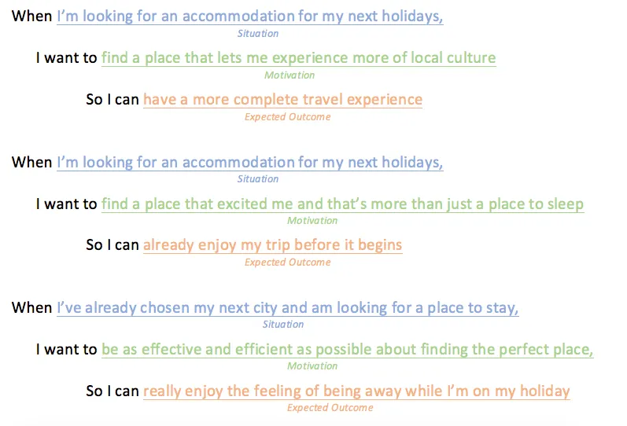
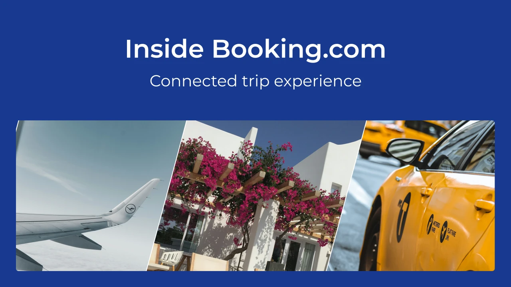
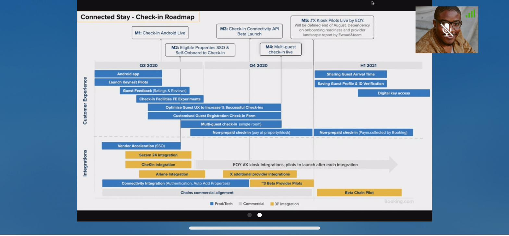
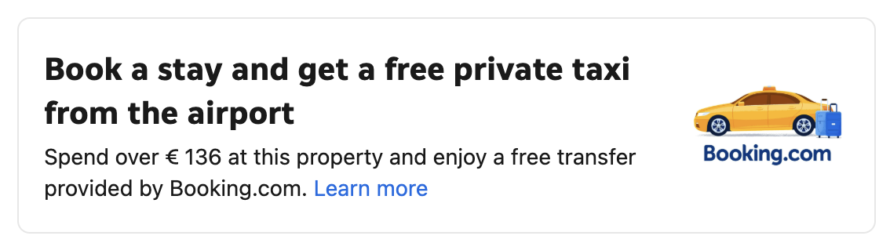
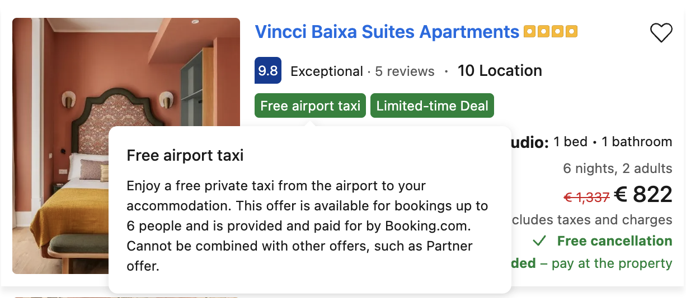
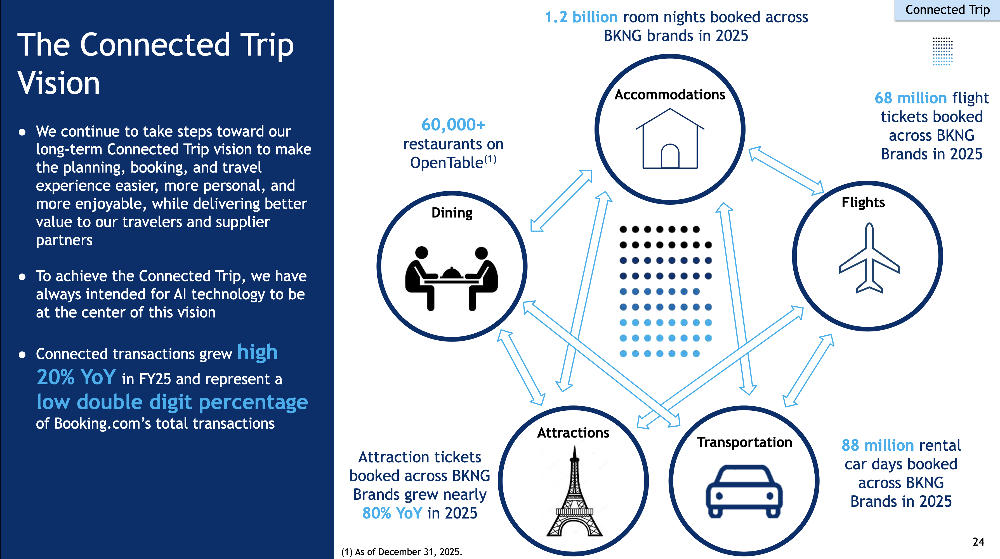

Booking.com is one of the world's largest travel platforms. As UX Team Lead for Connected Stay, I led cross-brand product design across Booking.com, Kayak, Priceline, Agoda, RentalCars.com, and OpenTable, building unified experiences for a product category that had never had them before.
Six brands, one vision
Connected Stay was one pillar of something much bigger: Booking's Connected Trip vision — a future where accommodations, flights, ground transport, attractions, and dining stop living in separate silos and behave as one seamless experience that adapts when plans change. The company had been laying that foundation since Glenn Fogel took the helm, and my team's mission was to help build the UX for it, starting with the stay itself.
The "Connected Stay" initiative was ambitious: create a seamless experience around the hotel stay (before, during, and after) that worked across six distinct brands with different audiences, design languages, and business models. Most cross-brand initiatives fail because someone eventually has to pick a winner. We had to build for all of them.
The friction we were trying to design out wasn't hypothetical. Earlier at Booking, I ran guerrilla usability testing on the core product as part of a cross-functional pod: researcher Bram Krommenhoek, three other researchers, a copywriter, and two product managers, mentored by my manager at BookingSuite at the time, Cale Kennedy, who as Manager of Software Development led 10 multidisciplinary teams across BookingSuite's direct channel SaaS platform, three-sided hotel tech marketplace, and frictionless check-in product; Mohammad Eltayeb later stepped into that role for the rest of my time there. Bram's write-up of that work captured exactly the continuity gaps Connected Stay was later built to close: users losing their filters every time they returned to search results after opening a listing, and struggling to tell which photos matched which room.

Shared foundations, distinct surfaces

We built a modular design system for Connected Stay: shared interaction patterns, data models, and content strategy that each brand could adapt without breaking coherence. The system needed to feel native on Kayak's search-first experience and equally native on Booking.com's accommodation-focused surface.

Two features show that system in practice. We designed a trip planner that let travellers set their dates, flights, and stay once and then adjust all three together, instead of juggling three separate bookings by hand. On the discovery side, we pushed Connected Stay past the room itself: browsing a destination surfaced local attractions and even live events, like concerts, pulling in restaurant data from OpenTable, hotels from Booking.com, and flights from Priceline into a single cross-brand flow, so the stay stopped being an isolated transaction and became one piece of a connected trip.


Ground transport got the same cross-brand treatment: booking a qualifying stay unlocked a free private airport taxi, funded by Booking.com and surfaced directly on the property page, turning a standalone accommodation booking into the start of a connected trip.


We also built a seamless check-in experience that carried the same connected logic from airport to front door: passport and ID collection and verification handled ahead of arrival, guided navigation from the airport to the accommodation, and arrival access sorted out in advance, whether that meant a digital key, an entry code, or a host greeting.
We shipped two major features: a cross-brand stay communication layer (messaging, service requests) and a post-stay feedback loop that fed directly into property quality scoring. Both shipped to millions of users within the same year.
Outside the core product work, I won two internal hackathons, a signal that our team was doing more than executing roadmap items: we were generating ideas the business wanted to run.
The Connected Trip kept going
My time at Booking ended with the 2021 COVID layoffs, which hit travel harder than almost any other industry. Even as I was leaving, Skift was reporting that Booking Holdings saw the connected trip strategy as critical to its post-crisis growth, while being candid that the company still had "work to do on its machinery" for cross-selling multiple travel products. The vision we were building toward didn't stop, and it's been vindicating to watch it become the company's flagship strategy: Booking now markets Connected Trip experiences directly to travellers, publishes partner stories about the growth it unlocks, and CEO Glenn Fogel still names it one of his big ideas for 2026, with AI as the technology that finally makes it achievable.

For a closer look at how the pieces fit together today, Timur Firsakov's breakdown of Booking's multi-product strategy is worth a read.
On cross-brand design
The hardest part of cross-brand work isn't the design. It's the negotiation. Every stakeholder comes with a different definition of "consistent." The key is building shared principles early and being willing to revisit them together when they get tested.